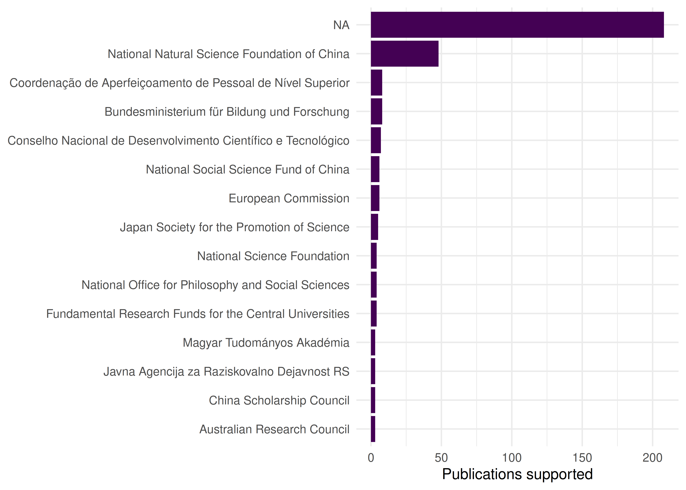
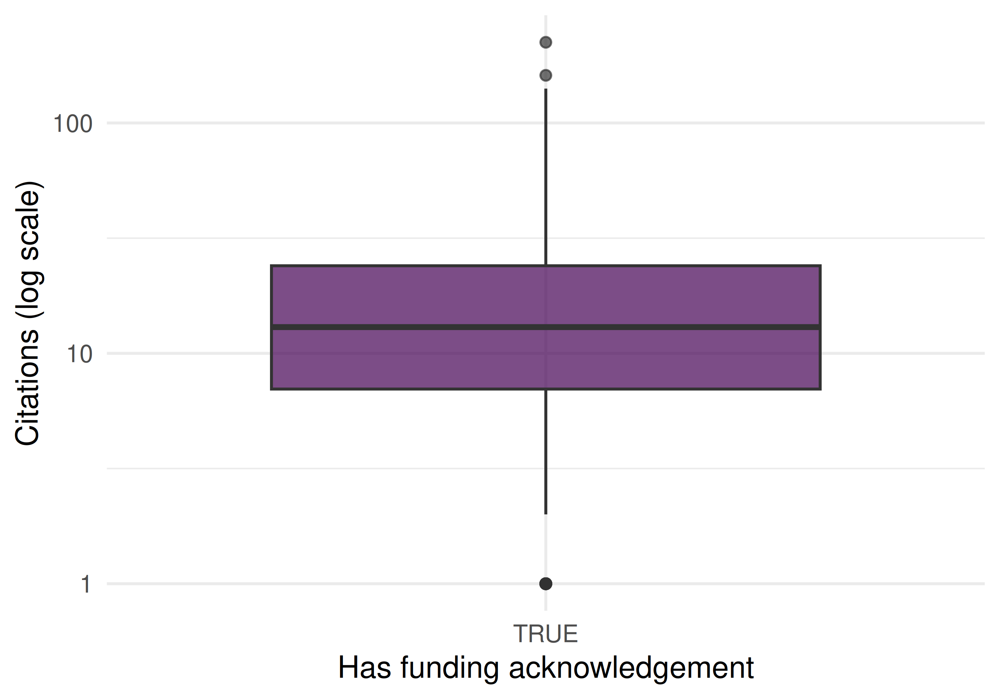

31 Funding Analysis and Grant-to-Publication Linkage
31.1 Learning objectives
After completing this chapter, you will be able to:
- Extract funder information from OpenAlex work records
- Compute funder-level publication counts and citation impact
- Analyse co-funding patterns (papers acknowledging multiple funders)
- Interpret funding data critically, accounting for coverage and attribution challenges
- Discuss why funding-output linkage is inherently imprecise
31.3 Conceptual background
Funding agencies invest billions in research and want to understand what their investment produces. Funding acknowledgement analysis extracts funder names and grant identifiers from publication metadata or full text, linking grants to the papers they supported.
OpenAlex includes funder information for many works, derived from Crossref’s funding metadata (which in turn comes from publisher-reported FundRef data). Coverage varies: journals that participate in Crossref’s FundRef initiative have good coverage; others may have no funding data at all (Priem et al. 2022).
Key analytical questions include: How many publications does a funder support? What is the citation impact of funded vs. unfunded research? Which funders frequently co-fund research? How does a funder’s portfolio map onto the landscape of science?
The fundamental challenge is attribution: a paper acknowledging three funders and seven authors is the result of contributions from all of them. Assigning full credit to each funder double-counts; fractional credit is more principled but harder to implement. Similar issues arise with multi-source funding: a paper may acknowledge an infrastructure grant, a project grant, and a fellowship, each with different levels of contribution.
31.4 Worked example
31.4.1 Extracting funder data
works <- oa_fetch(
entity = "works",
primary_location.source.id = "S148561398",
from_publication_date = "2020-01-01",
to_publication_date = "2023-12-31",
options = list(sample = 400, seed = 42)
)
funded <- works |>
select(id, display_name, cited_by_count, funders) |>
filter(map_lgl(funders, \(g) !is.null(g) && length(g) > 0))
cat(glue("Works with funder data: {nrow(funded)} / {nrow(works)} ({scales::percent(nrow(funded)/nrow(works))})\n"))#> Works with funder data: 400 / 400 (100%)
funder_data <- funded |>
unnest(funders, names_sep = "_") |>
select(work_id = id, funder = funders_display_name,
cited_by_count)
cat(glue("Funder-work pairs: {nrow(funder_data)}\n"))#> Funder-work pairs: 509#> Unique funders: 17831.4.2 Top funders by publication count
funder_counts <- funder_data |>
count(funder, sort = TRUE)
funder_counts |>
head(15) |>
mutate(funder = fct_reorder(funder, n)) |>
ggplot(aes(x = n, y = funder)) +
geom_col(fill = palette_sci(1)) +
labs(x = "Publications supported", y = NULL) +
theme_sci()
Figure 31.1: Top 15 funders by number of supported publications.
31.4.3 Citation impact by funder
funder_impact <- funder_data |>
group_by(funder) |>
summarise(
n_pubs = n(),
mean_cites = round(mean(cited_by_count), 1),
median_cites = median(cited_by_count),
.groups = "drop"
) |>
filter(n_pubs >= 5) |>
arrange(desc(mean_cites))
funder_impact |> head(10) |> gt()| funder | n_pubs | mean_cites | median_cites |
|---|---|---|---|
| National Social Science Fund of China | 6 | 48.0 | 21.0 |
| Bundesministerium für Bildung und Forschung | 8 | 24.5 | 16.5 |
| Conselho Nacional de Desenvolvimento Científico e Tecnológico | 7 | 22.9 | 15.0 |
| Coordenação de Aperfeiçoamento de Pessoal de Nível Superior | 8 | 21.5 | 13.0 |
| National Natural Science Foundation of China | 48 | 20.1 | 14.0 |
| NA | 208 | 19.3 | 10.0 |
| European Commission | 6 | 12.8 | 11.0 |
| Japan Society for the Promotion of Science | 5 | 8.0 | 7.0 |
31.4.4 Funded vs. unfunded comparison
works |>
mutate(has_funding = map_lgl(funders, \(g) !is.null(g) && length(g) > 0)) |>
ggplot(aes(x = has_funding, y = cited_by_count + 1)) +
geom_boxplot(fill = palette_sci(1), alpha = 0.7) +
scale_y_log10() +
labs(x = "Has funding acknowledgement", y = "Citations (log scale)") +
theme_sci()
Figure 31.2: Citation distribution for funded vs. unfunded papers.
31.5 Diagnostics and interpretation
- Coverage rate: The fraction of papers with funder data depends on the journal, publisher, and field. Report this rate before interpreting funder statistics.
- Funder name normalisation: The same funder may appear under different names (“NSF”, “National Science Foundation”, “US NSF”). Merge variants using funder IDs where available.
- Selection bias: Papers with funding acknowledgements may be systematically different from unfunded papers (larger teams, more resources). The funded/unfunded citation gap reflects this selection, not necessarily the causal effect of funding.
- Multi-funder attribution: Papers acknowledging multiple funders inflate the publication count for each. Consider fractional counting.
31.7 Limitations and responsible use
- Coverage is incomplete. Not all publishers report funding data to Crossref. Missing funder acknowledgements do not mean research was unfunded.
- Attribution is ambiguous. A grant acknowledgement does not specify which part of the work the grant supported. Infrastructure grants, salary support, and project funding all appear identically.
- Correlation ≠ causation. Funded papers receive more citations, but this may reflect that better-resourced labs produce both more funding applications and more cited papers.
- Do not rank funders by citation impact. Funders support different fields, career stages, and risk levels. Comparing mean citations across funders is misleading without field normalisation (Hicks et al. 2015).
31.9 Common pitfalls
- Ignoring funder coverage rates. Comparing funder portfolios without accounting for differential coverage produces biased results.
- Treating every acknowledgement as equal. A paper may acknowledge a major project grant and a minor travel grant. Both appear identically in metadata.
- Comparing across fields. A biomedical funder’s publications will have higher citation counts than a humanities funder’s publications due to field-level citation norms.
- Using funder data for individual evaluation. Whether a researcher has funding reflects many factors beyond research quality: field norms, career stage, institutional support, and luck.
31.10 Exercises
Funder co-occurrence. Identify papers with multiple funders. Which funder pairs most frequently co-fund research?
Funder portfolios. For two major funders, fetch their supported publications and compare topical profiles using keyword analysis.
Temporal trends. Track the number of papers with funding acknowledgements by year. Is the coverage rate increasing over time?
31.11 Solutions
Solutions are provided in 2.11.
31.13 Session info
#> R version 4.4.1 (2024-06-14)
#> Platform: x86_64-pc-linux-gnu
#> Running under: Ubuntu 24.04.4 LTS
#>
#> Matrix products: default
#> BLAS: /usr/lib/x86_64-linux-gnu/openblas-pthread/libblas.so.3
#> LAPACK: /usr/lib/x86_64-linux-gnu/openblas-pthread/libopenblasp-r0.3.26.so; LAPACK version 3.12.0
#>
#> locale:
#> [1] LC_CTYPE=C.UTF-8 LC_NUMERIC=C LC_TIME=C.UTF-8 LC_COLLATE=C.UTF-8 LC_MONETARY=C.UTF-8
#> [6] LC_MESSAGES=C.UTF-8 LC_PAPER=C.UTF-8 LC_NAME=C LC_ADDRESS=C LC_TELEPHONE=C
#> [11] LC_MEASUREMENT=C.UTF-8 LC_IDENTIFICATION=C
#>
#> time zone: UTC
#> tzcode source: system (glibc)
#>
#> attached base packages:
#> [1] stats graphics grDevices utils datasets methods base
#>
#> other attached packages:
#> [1] uwot_0.2.4 Matrix_1.7-0 word2vec_0.4.1 stm_1.3.8
#> [5] topicmodels_0.2-17 quanteda.textstats_0.97.2 visNetwork_2.1.4 ggraph_2.2.2
#> [9] tidygraph_1.3.1 igraph_2.3.1 quanteda_4.4 pdftools_3.8.0
#> [13] arrow_24.0.0 bibliometrix_5.3.0 RefManageR_1.4.0 bib2df_1.1.2.0
#> [17] rcrossref_1.2.1 gt_1.3.0 tidytext_0.4.3 glue_1.8.1
#> [21] openalexR_3.0.1 lubridate_1.9.5 forcats_1.0.1 stringr_1.6.0
#> [25] dplyr_1.2.1 purrr_1.2.2 readr_2.2.0 tidyr_1.3.2
#> [29] tibble_3.3.1 ggplot2_4.0.3 tidyverse_2.0.0
#>
#> loaded via a namespace (and not attached):
#> [1] bibtex_0.5.2 RColorBrewer_1.1-3 rstudioapi_0.18.0 jsonlite_2.0.0 magrittr_2.0.5
#> [6] modeltools_0.2-24 farver_2.1.2 rmarkdown_2.31 fs_2.1.0 vctrs_0.7.3
#> [11] memoise_2.0.1 askpass_1.2.1 base64enc_0.1-6 htmltools_0.5.9 contentanalysis_1.0.0
#> [16] curl_7.1.0 janeaustenr_1.0.0 cellranger_1.1.0 sass_0.4.10 bslib_0.10.0
#> [21] htmlwidgets_1.6.4 tokenizers_0.3.0 plyr_1.8.9 httr2_1.2.2 plotly_4.12.0
#> [26] cachem_1.1.0 dimensionsR_0.0.3 mime_0.13 lifecycle_1.0.5 pkgconfig_2.0.3
#> [31] R6_2.6.1 fastmap_1.2.0 shiny_1.13.0 digest_0.6.39 patchwork_1.3.2
#> [36] shinycssloaders_1.1.0 rprojroot_2.1.1 RSpectra_0.16-2 SnowballC_0.7.1 labeling_0.4.3
#> [41] urltools_1.7.3.1 timechange_0.4.0 mgcv_1.9-1 polyclip_1.10-7 httr_1.4.8
#> [46] compiler_4.4.1 here_1.0.2 bit64_4.8.0 withr_3.0.2 S7_0.2.2
#> [51] backports_1.5.1 viridis_0.6.5 ggforce_0.5.0 MASS_7.3-60.2 rappdirs_0.3.4
#> [56] bibliometrixData_0.3.0 tools_4.4.1 otel_0.2.0 stopwords_2.3 zip_2.3.3
#> [61] httpuv_1.6.17 rentrez_1.2.4 nlme_3.1-164 promises_1.5.0 grid_4.4.1
#> [66] stringdist_0.9.17 reshape2_1.4.5 generics_0.1.4 gtable_0.3.6 tzdb_0.5.0
#> [71] rscopus_0.9.0 ca_0.71.1 data.table_1.18.4 hms_1.1.4 xml2_1.5.2
#> [76] utf8_1.2.6 ggrepel_0.9.8 pillar_1.11.1 nsyllable_1.0.1 vroom_1.7.1
#> [81] later_1.4.8 splines_4.4.1 tweenr_2.0.3 brand.yml_0.1.0 lattice_0.22-6
#> [86] FNN_1.1.4.1 bit_4.6.0 tidyselect_1.2.1 tm_0.7-18 miniUI_0.1.2
#> [91] downlit_0.4.5 knitr_1.51 gridExtra_2.3 NLP_0.3-2 bookdown_0.46
#> [96] stats4_4.4.1 crul_1.6.0 xfun_0.57 graphlayouts_1.2.3 matrixStats_1.5.0
#> [101] DT_0.34.0 humaniformat_0.6.0 stringi_1.8.7 lazyeval_0.2.3 qpdf_1.4.1
#> [106] yaml_2.3.12 evaluate_1.0.5 codetools_0.2-20 httpcode_0.3.0 cli_3.6.6
#> [111] xtable_1.8-8 jquerylib_0.1.4 dichromat_2.0-0.1 Rcpp_1.1.1-1.1 readxl_1.4.5
#> [116] triebeard_0.4.1 XML_3.99-0.23 parallel_4.4.1 assertthat_0.2.1 pubmedR_1.0.2
#> [121] slam_0.1-55 viridisLite_0.4.3 scales_1.4.0 crayon_1.5.3 openxlsx_4.2.8.1
#> [126] rlang_1.2.0 fastmatch_1.1-8